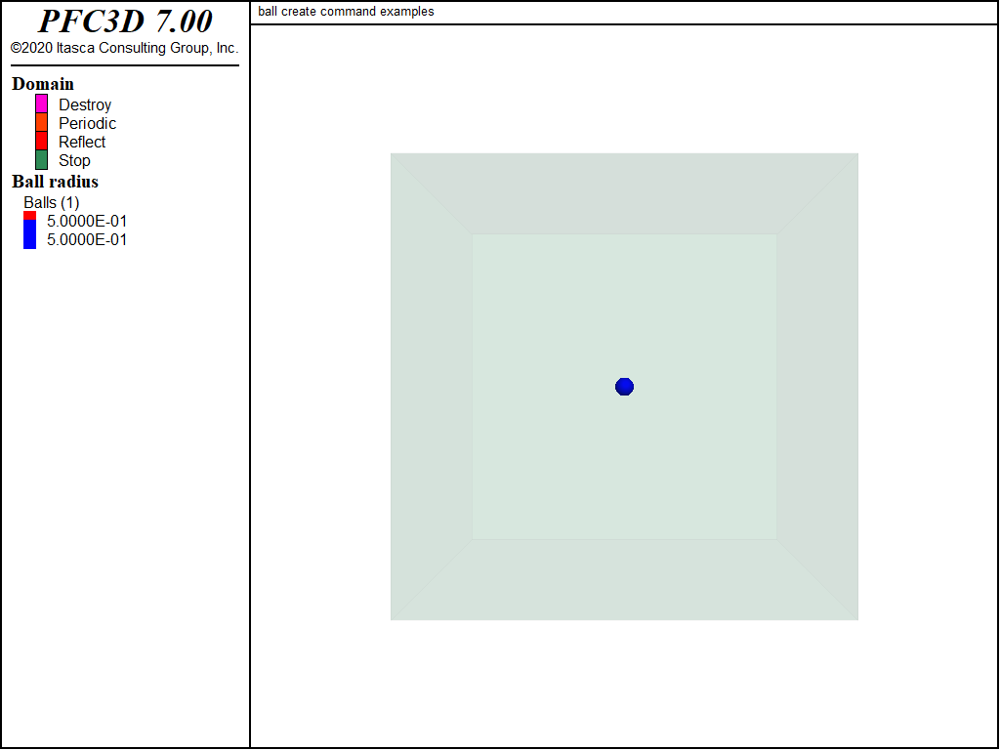
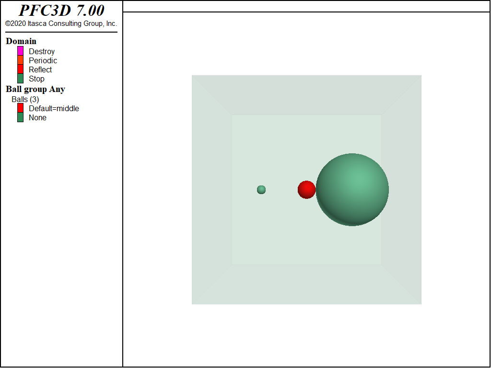

ball create 命令
语法
- ball create keyword ...
-
按指定属性创建单个球颗粒。
注意
- 在创建球颗粒之前必须先指定模型域。
- 在循环计算过程中，只能在循环点 0 之前（即在计算时步时）创建球颗粒。
- group s <slot slot > ...
对新创建的球颗粒，其分组槽位 槽位（slot） 被设置为 s。 如果未指定 slot 关键字，则分组名被赋予名称为 默认（Default） 的槽位。
- id i
球颗粒 ID。若未指定，则使用下一个可用的 ID。如果系统中已存在具有指定 ID 的球颗粒，则会报错。
- position v
球颗粒位置，默认为原点。
- radius f
球颗粒半径。若未指定，则创建的球颗粒半径等于最小计算域尺寸的 1/40。不允许 使用大于或等于最小计算域尺寸的 1/4 的取值。
- position-x f
位置的 x 分量，默认为 0。
- position-y f
位置的 y 分量，默认为 0。
- position-z f （仅限 3D）
位置的 z 分量，默认为 0。
用法示例
ball create 命令是可用于创建球颗粒的三个命令之一。备选命令
为 ball generate 和 ball distribute。如上述命令说明所述，ball create 命令可用于创建单个球颗粒。
使用默认参数时，将在原点创建一个球颗粒，其 ID 为下一个可用值，半径等于最小计算域尺寸的 1/40：
model domain extent -10.0 10.0
ball create


图 1：使用默认参数时，ball create 命令在原点创建一个球颗粒，其半径
等于最小计算域尺寸的 1/40。
可以覆盖默认参数，以控制命令的执行结果。在下面的示例中，使用
ball create 命令连续三次创建了三个球颗粒。第一个球颗粒创建于 x = -5.0（采用默认半径）；第二个球颗粒创建于 x = 5.0，
半径为 4.0；最后一个球颗粒创建于原点（默认），其 ID 为 10、半径为 1.0，并分配了分组。
model domain extent -10.0 10.0
ball create position-x -5.0
ball create position-x 5.0 radius 4.0
ball create id 10 position-x 0.0 radius 1.0 group 'middle'


图 2：覆盖默认参数可完全控制命令的行为。
如上例所示，通过重复执行 ball create 命令可以创建多个球颗粒。教程示例
“使用 FISH 回调（Using FISH Callbacks）”演示了
如何按给定频率定期发出此命令来创建球颗粒。
ball create 命令的替代命令为 ball generate 和 ball distribute 命令，它们用于一次性生成球颗粒集合体。
另请参见
| 这些内容对您有帮助吗？… | FLAC3D © 2019, Itasca | 原文更新于 2020 年 10 月 8 日 |